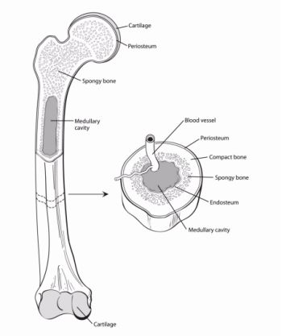

Chondrosarcoma

CAUSES
Causes include:
- Maffucci Syndrome. People who have this syndrome have a large number of benign tumors on their bones that cause their bones to weaken. They might also have reddish or purplish skin growths, called hemangiomas, which are knots and tangles of unusually large blood vessels.
- Ollier’s Disease. Like Maffucci syndrome, people who have this condition have multiple benign tumors on their bones.
- Multiple Hereditary Exostoses (osteochondromatoses). These are multiple benign bone tumors that can disrupt your bone growth.
SYMPTOMS
Symptoms can be:
- Fatigue.
- Fever.
- Unintentional weight loss.
DIAGNOSIS
To diagnose chondrosarcoma, your healthcare provider will often first use X-rays to view images of your bones. Magnetic resonance imaging (MRI) and CT (computed tomography) scans provide more detailed images of the areas around your bones and are usually obtained before any treatment.
To confirm the diagnosis, your healthcare provider will perform a biopsy, where a small piece of tissue is removed from the bone to be examined under a microscope. Pathologists then look at your tissue under a microscope. This process is sometimes called histology and is done to learn more about your chondrosarcoma. For example, pathologists confirm your tumor started in your cartilage instead of spreading to there from another area in your body. They also determine your chondrosarcoma’s grade, which is a measure of how fast your tumor is likely to grow. This information helps providers set your treatment plan.
TREATMENTS
Healthcare providers typically use surgery to treat chondrosarcoma. Your healthcare provider will talk to you about your treatment options, including surgery that might require removing a limb.
- Surgery: You might have limb-salvage or limb-sparing surgery. Your surgeon removes your cancer and some surrounding normal tissue but leaves your limb intact. Sometimes limb salvaging surgery isn’t possible. In that case, your surgeon removes the cancer and all or part of your limb.
- Bone grafts: Your surgeon might use real or artificial bone grafts to repair or rebuild affected bones.
- Sometimes, repeat surgery is needed if all of the cancer cells were not removed the first time around.